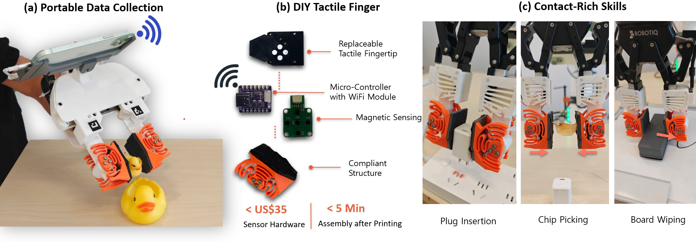
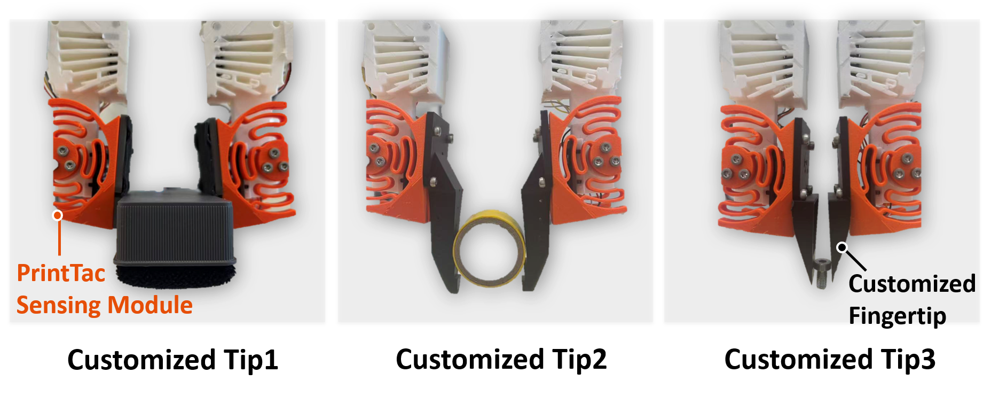
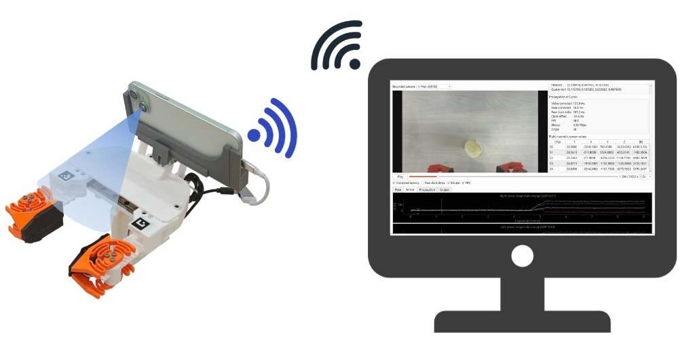

PETG flexure
The monolithic flexure allows the contact plate to move relative to the fixed magnetometer array. Print both fingers from the same CAD model and print profile to reduce fabrication differences.
Build a tactile UMI gripper.
Assemble modular tactile fingertips with a printed PETG flexure and a magnetometer array. Connect them to an iPhone to record touch, vision, and pose in a portable demonstration system.

This guide combines public PrintTac materials with the current ARPoseStreamer implementation. The available materials do not include a complete CAD package, magnet dimensions, fastener specifications, print profiles, or board firmware. These items are marked as pending below. Obtain the matching design files before purchasing parts, printing, or flashing boards.
Flexure · magnets · contact tip
Sensor board · ESP32 · Wi-Fi
Touch · aperture · pose
BILL OF MATERIALS
The quantities below describe a two-finger handheld gripper with independent sensing on each finger. Use the released CAD and BOM to determine magnet and fastener quantities.
| Component | Qty. | Purpose / requirement | Status |
|---|---|---|---|
| Five-chip magnetometer boardSensing core | 2 | Five three-axis magnetic readings per finger. The board must match the firmware. | Model pending |
| Adafruit QT Py ESP32Wireless controller | 2 | Reads magnetic data and sends it to the phone. Confirm the exact variant and pinout. | Variant pending |
| PETG compliant flexurePrinted structure | 2 | Use identical CAD, material, and print settings for both fingers. | CAD pending |
| PLA contact tipReplaceable interface | 2 | Select a flat wiping pad or a pointed grasping tip for your task. | CAD pending |
| Cylindrical neodymium magnets | Per CAD | Seated behind the rigid contact plate. Match dimensions and polarity to the design. | Dimensions pending |
| Gripper chassis, phone mount & fasteners | 1 set | Secure both fingers and the phone. Fasteners must not interfere with the flexure. | BOM pending |
| ARKit-compatible iPhone | 1 | The current ultrawide ArUco path requires a compatible iPhone Pro and iOS version. Verify on the actual device. | Documented |
| USB-C power adapter & cables | 1 set | Verify the phone output, board supply requirements, and combined current draw. | Adapter pending |
| ArUco markers, IDs 0 and 1 | 1 each | DICT_4X4_50; 16 mm black outer edge. Print at 100% scale. | Software convention |
An FDM printer, digital calipers, screwdrivers matched to the fasteners, and a Mac with Xcode for app installation. A Windows or macOS computer is used for monitoring, uploads, and processing; on-site recording can run on the phone alone.
3D PRINTING
The monolithic flexure allows the contact plate to move relative to the fixed magnetometer array. Print both fingers from the same CAD model and print profile to reduce fabrication differences.
The rigid contact tip is mechanically separate from the sensing core. Change the task-facing geometry while preserving the relative positions of the magnets, sensor board, and flexure.
| Print parameter | Available specification |
|---|---|
| Material | PETG for the compliant flexure; PLA for the rigid contact tip. |
| Layer height, walls, infill & orientation | Pending a validated print profile. Do not treat these as interchangeable settings. |
| Nozzle, temperature, speed & supports | Pending a profile matched to the printer and filament. |
| Revision tracking | Record the CAD revision, filament batch, and slicer project. Keep both fingers consistent. |
These are suggested assembly checks. Load limits and dimensional tolerances must come from the matching design revision; simulation loads are not a rated operating limit.
FINGERTIP ASSEMBLY

Follow the matching CAD for pocket positions, magnet count, and polarity. Keep both fingers consistent with the reference sensing configuration. Confirm polarity before permanently securing the magnets.
Keep the magnetometer board fixed to the base while the magnets move with the contact plate. Check that tightening does not bend the board or constrain the flexure. Route cables clear of moving parts.
Use the fasteners specified by the design. Preserve the internal magnetic sensing stack when replacing a tip. Check the unloaded signal and elastic return after assembly and each replacement.
Gently touch the tip and inspect all five chips. Signals should respond to contact and return to a stable unloaded baseline. Once both fingers pass, mount them on the gripper and secure the phone and cables.
Video hosted by the original project. If playback is unavailable, view the assembly materials on the project page.
POWER & WIRELESS

The available materials do not establish the exact pinout, voltage, or bus wiring. Obtain the sensor-board documentation, QT Py variant, power requirements, and matching firmware first. In this architecture, USB-C supplies power; magnetic data travels over Wi-Fi.
| Direction | Protocol / port | Purpose |
|---|---|---|
| Right finger → iPhone | ASKN · UDP 5557 | 96-byte magnetic packets |
| Left finger → iPhone | ASKN · UDP 5562 | Independent left-finger data |
| iPhone → computer | APM2 · UDP 5558 | Pose and two-finger magnetic data |
| Computer → iPhone | PC_HELLO · UDP 5559 | Registration heartbeat |
| Main / ultrawide → computer | UDP 5560 / 5561 | Video streams; ultrawide for ArUco |
| Saved capture → computer | HTTP · TCP 8000 | Historical file upload |
Validate hotspot routing on the target iPhone and iOS version. The app cannot enable Personal Hotspot through a public iOS API.
IPHONE SETUP
Build the current ARPoseStreamer project on a Mac and install it on a physical iPhone using Xcode.
xcodegen generateThe current 0.5× capture path uses private ARKit fields on compatible iPhone Pro devices and requires development-signed sideloading. An iOS update may break this path. Verify the ultrawide preview before collecting gripper data; main-camera recording and pose tracking can operate independently.
GRIPPER CALIBRATION
Sensor-instance consistency and aperture calibration are separate concerns. The current software estimates opening from two ArUco markers in the ultrawide image. After assembly, calibrate this measurement against the actual distance between the inner gripping surfaces.
Print at 100% scale and verify the black outer edge with calipers. Rigidly mount IDs 0 and 1 on the moving jaws. Keep them at similar height and depth, approximately coplanar, with the camera X axis aligned to the opening direction.
Launch Experiment Monitor, select Start Monitor, and open ArUco Gripper. Both markers must be visible in the same 0.5× frame throughout the opening range.
Measure the actual jaw gap with calipers. Hold the minimum opening still for about one second and record the minimum point. Repeat at the maximum opening.
Save and apply the calibration. Compare an intermediate opening against the calipers. Recalibrate after changing marker placement, print scale, camera lens, or mounting geometry.
python -m pip install -r requirements_visualizer.txt
.\run_experiment_monitor_windows.ps1The raw measurement is the separation of the two markers along the camera X axis in the same frame:
raw_width = abs(x_id1 - x_id0)
opening = scale × raw_width + offsetThe default marker-depth gate is 72 ± 8 mm. If the monitor reports marker_depth_out_of_range, use its control to apply the current depth. The quick calibration uses statistics from stable frames; repeated opening and closing remains an optional robust-calibration method.
FIRST CAPTURE
Start with a short test: move the phone, gently touch each fingertip, open and close the gripper, then inspect the saved files. A computer does not need to remain connected during local recording.
Start Recording, perform the short test, then stop recording.Past Records and confirm the session was saved.Upload Data for data and the separate video-upload controls for video.Captures/<session>/
pose.csv
magnetic_right.csv
magnetic_left.csv
video.mp4
capture_manifest.jsonA magnetic CSV is created after the first valid sample arrives on that side. Video files are created when recording is enabled. Supported ultrawide recording and upload paths may also produce a separate video.
Missing tactile input does not block pose or main-camera recording. For two-finger experiments, confirm that both magnetic files are present.
py capture_upload_server.py --host 0.0.0.0 --port 8000Connect the computer to the same phone hotspot. Read its actual gateway address and replace PHONE_IP below before running:
py pose_magnetic_receiver.py --phone-ip PHONE_IP172.20.10.1 is a common hotspot gateway, but use the actual network configuration. Local phone recording continues if the computer disconnects.
VALIDATION & TROUBLESHOOTING
Check 2.4 GHz compatibility, local-network permission, the DHCP gateway, side-specific ports, and the ASKN packet format. The current app expects 96-byte packets. Firmware must implement the matching protocol. Enable the hotspot before starting or reconnecting the boards.
Touch each finger separately and check the corresponding app channel. The right finger uses UDP 5557; the left uses UDP 5562. Configure both boards independently. Sending both streams to one port does not automatically separate the sides.
Confirm the monitor is processing the 0.5× stream, both markers are visible in the same frame, the printed size is 16 mm, and marker depths pass the gate. Avoid warped or reflective markers. Hold each endpoint still for about one second and repeat if there are too few valid frames.
Check whether the magnets, sensor board, or flexure moved, whether tightening caused deformation, and whether nearby magnetic objects affect the signal. Resolve mechanical and environmental changes before repeating the unloaded check.
Confirm that the phone and computer can reach each other, the upload service is running on TCP 8000, the app's Host IP points to the computer, and the firewall allows the service. Upload data and video through their respective controls.
SOURCES & RELEASE STATUS
This guide connects the PrintTac hardware overview to the current collection workflow. Ports, marker dimensions, and quick-calibration instructions follow the current workspace documentation and may differ from a later release.
Reproduction package pending: CAD / STL files, validated print profiles, magnet-polarity layout, complete BOM, wiring diagrams, firmware, and a hardware–software revision map. These are required to turn the documented architecture into a fully reproducible build.
Images and video are from the PrintTac project page. Research and designs belong to their original authors. The submission manuscript is not reproduced here.